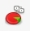

En tu hoja de cálculo, los diagramas hacen referencia a los gráficos estadísticos que se utilizan para representar los datos contenidos en las celdas de tu tabla. El programa te ofrece varios tipos de gráficos a elegir, de columnas, barras, líneas, círculo, etc… Lo primero que tienes que hacer es seleccionar aquellas celdas cuyos datos quieres que se reflejen en el gráfico, y después, haces clic en el botón del asistente de gráficos que está situado en la barra de herramientas, ese que tiene un dibujo a modo de gráfico circular, el de los quesitos . La ventaja de que uses un asistente es que él te irá guiando en el proceso, tu sólo tienes que ir marcando las opciones que se acerquen más al tipo de gráfico que deseas crear, y además, el asistente te va mostrando una visión previa de como quedaría el gráfico con las opciones que vas seleccionando. Estas opciones se corresponden con:
Anterior: 7 - Insertar funciones
Siguiente: 9 - Guardar y guardar en otros formatos
{kind=link}
{kind=link}